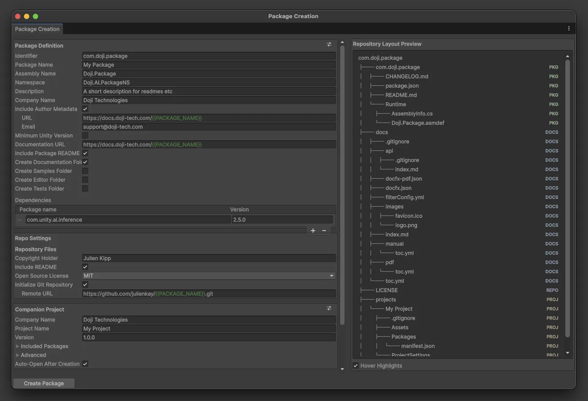

Manual

tools.doji.package-authoring provides Unity editor tooling for scaffolding reusable UPM packages, companion Unity projects, and the repository files that support them.
Manual Contents
- understand the main repository-generation workflow
- look up what a specific wizard setting changes
- configure project defaults or reusable presets
- customize generated readmes, licenses, AGENTS files, or DocFX files
- understand what the generated companion or standalone Unity projects contain
How The Package Is Organized
The package is centered around two editor windows under Window > Package Authoring:
Window > Package Authoring > Create Package...creates a repository that contains a UPM package, optional supporting folders, and a companion Unity projectWindow > Package Authoring > Create Project...creates a standalone Unity project from the shared project defaults
The package also adds project-scoped defaults and template editors under Project Settings > Doji > Package Authoring.
Read By Goal
- Package Creation Wizard: generation flow and repository shape
- Package Creation Wizard Settings: field-by-field reference for the main wizard
- Defaults And Presets: project defaults, preset assets, and how they relate
- Templates: generated file customization
- Companion And Standalone Projects: generated Unity project structure and flow differences
- Scripting API: automate package or project generation from editor scripts
Three Concepts To Keep In Mind
Defaults
The settings page at Project Settings > Doji > Package Authoring stores the baseline values used when a new wizard window opens. These defaults are saved per Unity project.
Presets
Preset assets capture reusable authoring configurations. In the package creation wizard, the package/repository side and the companion-project side each have their own preset button so you can apply only the relevant portion of a preset.
Templates
Generated text files such as README.md, AGENTS.md, LICENSE, and the DocFX scaffold are backed by project-scoped templates. Field values decide the data. Templates decide how that data is rendered into files.
API Reference
The Scripting API documents the editor-facing types exposed by the package.